基于课件的知识梳理，内容较为详细，仅供参考
第一章 绪论
1.1 数据库系统概述
Data < DataBase（数据的集合） < DBMS（软件） < DBS（硬件、软件、人员）
与文件系统、人工管理相比，数据库系统的特点：
- 整体数据的结构化（本质区别）
- 数据的共享性强、冗余度低且易扩充
- 数据独立性强
- 数据有DBMS统一管理和控制
- 安全性保护（防止不合法使用造成数据泄密和破坏）
- 完整性检查（正确性、有效性、相容性）
- 并发控制
- 数据库恢复
1.2 数据模型
数据模型：由数据结构、数据操作、完整性约束组成
（1）概念模型——E-R图
（2）逻辑模型（层次、网状、关系、面向对象）
层次模型：类似一棵树
网状模型：p59，一张网
关系模型：一张表（存取路径对用户透明，查询路径低）
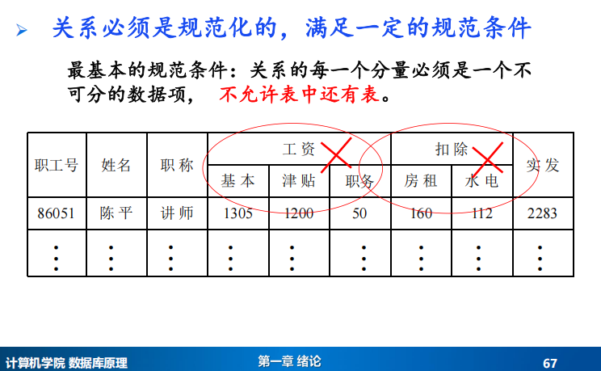
1.3 数据库系统结构
数据库体系结构：从外部看：分布式结构（多计算机）
数据库系统结构：从内部看：三级模式结构
flowchart TD
subgraph A [应用程序/用户视图]
direction LR
A1[应用程序1]
A2[应用程序2]
A3[应用程序3]
end
subgraph B [数据库系统模式结构]
S1[外模式/外模式 1<br>（用户模式）]
S2[外模式/外模式 2<br>（用户模式）]
subgraph M1[外模式/模式映像]
Note1[“逻辑独立性”：模式改变（如增加列），修改该映像，外模式和应用程序可以不需要改动]
end
S3[模式]
subgraph M2[模式/内模式映像]
Note2[“物理独立性”：内模式改变（如修改存储结构），修改该映像，模式与应用程序可以不需要改动]
end
S4[内模式<br>（存储模式）]
end
subgraph C [物理数据库]
D[物理数据库文件]
end
A1 -- “使用” --> S1
A2 -- “使用” --> S2
A3 -- “使用” --> S1
S1 ---> M1
S2 ---> M1
M1 --> S3
S3 ---> M2
M2 --> S4
S4 -- “存储” --> C
%% 样式定义，使层次更清晰
classDef level1 fill:#e1f5fe,stroke:#01579b,stroke-width:2px;
classDef level2 fill:#f3e5f5,stroke:#4a148c,stroke-width:2px;
classDef level3 fill:#fff3e0,stroke:#e65100,stroke-width:2px;
classDef level4 fill:#e8f5e8,stroke:#1b5e20,stroke-width:2px;
classDef mapping fill:#f5f5f5,stroke:#424242,stroke-width:1px;
class A1,A2,A3 level1;
class S1,S2 level2;
class S3 level3;
class S4 level4;
class M1,M2 mapping;第二章 关系数据库
2.1 关系数据结构及形式化定义
几个重要概念：
候选码：能唯一标识元组的最精简集（通过候选码能推出全部属性）
超码：任意一个候选码的超集（候选码也是超码，只要能推出全部属性就是超码，而候选码是最小超码）
主码：多个候选码中选定一个作主码
主属性：候选码中的属性
非主属性：不出现在任何一个候选码中的属性
2.2 关系操作
2.3 关系的完整性
实体完整性：若属性A是基本关系R的主属性，则属性A不能取空值
参照完整性：外码（不是这个关系的码，但是另一个关系中的主码）
2.4 关系代数
并、交、差 要求参与的两个关系要有相同的结构（∪、∩、—）
选择：
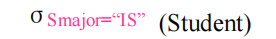
红字的位置写选择的条件，括号里写关系的名字，选出来这几行
投影：
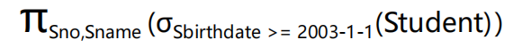
下标写要选择的列名，选出来这几列（如果有重复行会去掉)
连接：
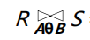
下标写上连接的条件。各种连接详看PPT2-1 49
除法：
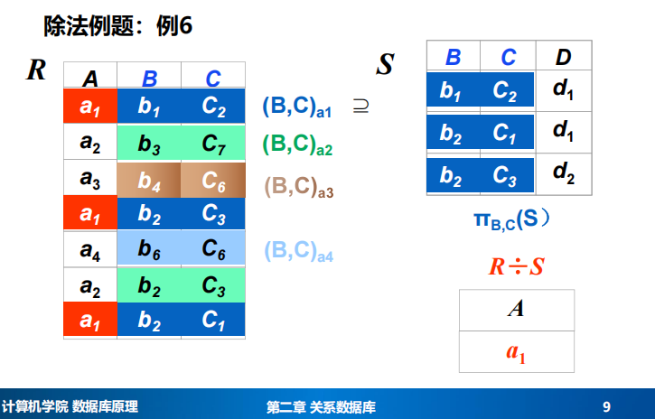
选出了包含S中B、C的全部A的值
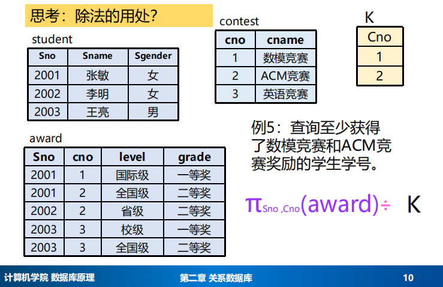
2.5 关系演算（貌似仅作了解）
第三章 关系数据库标准语言SQL
3.1 SQL概述
特点：高度非过程化
3.2 学生-课程示例数据库
3.3 数据定义
3.3.1 数据库 (DATABASE) 操作
基本上就用得到CREATE DATABASE database_name、DROP DATABASE IF EXISTS student;
1.创建数据库
1 | CREATE DATABASE database_name |
1 | CREATE DATABASE student; |
常用选项:（一般用不到）
CHARACTER SET charset_name (如 utf8mb4)
COLLATE collation_name (如
utf8mb4_0900_ai_ci)
2.查看数据库
1 | SHOW DATABASES; |
3.修改数据库
1 | ALTER {DATABASE | SCHEMA} [db_name] |
1 | ALTER DATABASE mydb |
4.删除数据库
1 | DROP DATABASE [IF EXISTS] database_name; |
1 | DROP DATABASE IF EXISTS student; |
3.3.2 基本表 (TABLE) 操作
1.创建表
1 | CREATE TABLE <表名> |
常用数据类型: - 整数: SMALLINT, INT,
BIGINT - 小数: DECIMAL(M, D) (如
DECIMAL(5,2)) - 字符: CHAR(n),
VARCHAR(n), TEXT - 日期: DATE,
DATETIME
完整性约束: - PRIMARY KEY (主键) -
FOREIGN KEY ... REFERENCES ... (外键) - UNIQUE
(唯一键) - NOT NULL (非空) - DEFAULT (默认值)
- AUTO_INCREMENT (自增，MySQL)
1 | CREATE TABLE Student |
1 | CREATE TABLE SC |
2.修改表 (ALTER TABLE)
增加列
1
2ALTER TABLE <表名>
ADD <新列名> <数据类型> [完整性约束];1
ALTER TABLE Student ADD Semail VARCHAR(30);
修改列数据类型
1
2ALTER TABLE <表名>
ALTER COLUMN <列名> <新数据类型>; -- 标准SQL，部分DBMS使用 MODIFY1
ALTER TABLE Student ALTER COLUMN Sbirthdate VARCHAR(20);
增加约束
1
2ALTER TABLE <表名>
ADD [CONSTRAINT <约束名>] 约束类型 (列名);1
ALTER TABLE Course ADD UNIQUE (Cname);
删除约束
1
2ALTER TABLE <表名>
DROP CONSTRAINT <约束名>; -- MySQL中常用 DROP INDEX1
ALTER TABLE Student DROP CONSTRAINT IX_sname;
3.删除表
1 | DROP TABLE <表名>; |
1 | DROP TABLE Student; |
3.3.3 索引 (INDEX) 操作
1.创建索引
1 | CREATE [UNIQUE | FULLTEXT | SPATIAL] INDEX <索引名> |
1 | CREATE UNIQUE INDEX Idx_Stusno ON Student(Sno); |
2. 查看索引
1 | SHOW INDEX FROM <表名>; |
3. 删除索引
1 | DROP INDEX <索引名> ON <表名>; |
1 | DROP INDEX Stusname ON Student; |
3.4 数据查询
查询总体框架：SQL 查询语句结构（课件核心）
1 | SELECT [ALL | DISTINCT] <输出列或表达式> |
这一行公式可以覆盖课件所有查询内容，是接下来所有知识点的主线。
Student（学生表）
| Sno | Sname | Sgender | Sbirthdate | Smajor |
|---|---|---|---|---|
Course（课程表）
| Cno | Cname | Cpno | Credit |
|---|---|---|---|
SC（选课表）
| Sno | Cno | Grade |
|---|---|---|
① 单表查询（Projection + Selection）
来自第一份课件 3.4.1
- 投影（选择列）
1 | SELECT Sno, Sname FROM Student; |
- 表达式 / 内置函数 / 别名
1 | SELECT |
涵盖 表达式、日期函数、别名 AS
- 去重 DISTINCT
1 | SELECT DISTINCT Smajor FROM Student; |
- WHERE 条件（谓词）
包括：
- 比较 =, <>, >, <
- AND / OR / NOT
- IN / NOT IN
- BETWEEN
- LIKE / ESCAPE
- IS NULL / IS NOT NULL
例：
1 | SELECT * |
- ORDER BY 排序
1 | SELECT Sno, Sname, Grade |
② 聚集函数 + GROUP BY + HAVING
- 聚集函数：COUNT / SUM / AVG / MIN / MAX
- HAVING 作用于分组后，WHERE 作用于分组前
示例（覆盖全部语法）：
1 | SELECT |
覆盖点：
- GROUP BY
- 聚集函数 COUNT、AVG
- HAVING
- ORDER BY
- NULL 忽略机制（AVG、COUNT(col) 不统计 NULL）
③ 连接查询（JOIN）——等值、自然、自连接、外连接、复合条件连接
属于哪个表，记得要标出 . 前面的
来自第一份课件 3.4.2
- 等值连接（最常用）
1 | SELECT Student.Sno, Sname, Cno, Grade |
- 自连接（常见于先修课 Cpno）
1 | SELECT A.Cno, B.Cpno |
- 外连接（LEFT / RIGHT）
1 | SELECT S.Sname, SC.Cno, SC.Grade |
可看到未选课学生（NULL）
LEFT JOIN：保留左边的S，要是没SC没匹配上就是NULL
- 复合条件连接
1 | SELECT Student.Sno, Sname |
④ 嵌套查询（重点 & 难点）
分四类：
类型 1：IN 子查询（非相关）
例：查询选修“信息系统”课程的学生姓名（课件例题）
1 | SELECT Sno, Sname |
类型 2：比较运算符子查询（=, >, < 等）
例：与“刘晨”同专业的学生（课件例题）
1 | SELECT Sno, Sname |
特征：子查询返回单值。
类型 3：ANY / ALL 子查询（集合比较）
例：年龄比 CS 专业任意一个学生都小（出生更晚）
1 | SELECT Sname, Sbirthdate |
等价写法（课件提供）：
1 | Sbirthdate < MIN(...) |
覆盖：
- ANY/SOME
- ALL
- MAX/MIN 等价替代
类型 4：EXISTS / NOT EXISTS（相关子查询）
若内层查询结果非空，则where返回true
若内层查询结果为空，则where返回false
查选修了 1 号课的学生姓名（课件例题）
1 | SELECT Sname |
相当于是一行一行地看，这一行符合条件，就把相应的Sname返回
查未选修 1 号课的学生
1 | SELECT Sname |
查“选修了所有课程的学生”（课件的全称量词例题）
1 | SELECT Sname |
可以改写为
1 | SELECT S.Sname |
如果只查学号的话
1 | SELECT Sno |
查询至少选修了学生95002选修的全部课程的学生学号（可以不用两层嵌套）
1 | select sno |
覆盖：
- 相关子查询（子查询依赖外层值）
- EXISTS / NOT EXISTS
- 全称量词：∀P(x) 转为 ¬∃¬P(x)
- 大部分子查询可重写为 EXISTS
⑤ 集合查询（UNION / INTERSECT / EXCEPT）
课件 3.4.4
1 | SELECT Sno FROM SC WHERE Cno='1' |
MySQL 只支持 UNION，不支持 INTERSECT / EXCEPT。
⑥ 基于派生表的查询（FROM 子查询 + SELECT 子查询）
来自课件 3.4.5
FROM 子查询
1 | SELECT Sname |
SELECT 子查询（标量子查询）
1 | SELECT |
注意事项（课件强调）：
- 标量子查询必须返回单值
- 与 JOIN 方式结果不完全等价（处理 NULL 的差异）
最终：查询部分所有内容总结（两份课件的全部查询内容）
| 主题 | 内容 |
|---|---|
| 单表查询 | SELECT、DISTINCT、WHERE、比较、LIKE、IN、BETWEEN、NULL、ORDER BY |
| 多表查询（连接） | INNER JOIN、LEFT/RIGHT JOIN、自然连接、自连接、复合条件 |
| 聚集与分组 | COUNT/SUM/AVG/MAX/MIN、GROUP BY、HAVING、分组后过滤 |
| 嵌套查询（重点） | IN、比较子查询、ANY/ALL、EXISTS/NOT EXISTS（相关子查询） |
| 集合查询 | UNION / INTERSECT / EXCEPT |
| 派生表（FROM 子查询） | 临时表、CTE |
| 标量子查询（SELECT 子查询） | 返回单值，用于 SELECT 输出列 |
| 注意点 | 聚集函数不能出现在 WHERE；嵌套查询的等价转换；外连接处理 NULL |
3.5 数据更新
一、数据更新（INSERT / UPDATE / DELETE）
- INSERT — 插入数据
（1）插入完整一行
1 | INSERT INTO Student |
（2）指定列插入
1 | INSERT INTO SC (Sno, Cno, Grade) |
（3）插入查询结果（INSERT … SELECT）
用于复制表、动态生成数据
1 | INSERT INTO GoodStudents(Sno, Sname) |
- UPDATE — 修改数据
（1）直接更新
1 | UPDATE Student |
（2）表达式更新
1 | UPDATE SC |
（3）结合子查询更新
课件例子：把某专业学生的成绩全部提高
1 | UPDATE SC |
（4）CASE 条件更新（课件有提到）
1 | UPDATE SC |
- DELETE — 删除数据
（1）按条件删除
1 | DELETE FROM SC |
（2）删除表中全部数据
1 | DELETE FROM SC; |
（3）结合子查询删除
删掉没有选“数据库”课程的学生
1 | DELETE FROM Student |
3.6 空值的处理
NULL ≠ 0，NULL ≠ ''，NULL ≠ NULL 任何与 NULL 的算术或比较运算结果都是 NULL（未知）
1. 判断 NULL
课件重复强调：必须用 IS NULL 或
IS NOT NULL
1 | SELECT * FROM SC WHERE Grade IS NULL; |
2. NULL 与条件（WHERE）
注意：
1 | WHERE Grade = NULL -- 错误 |
必须写：
1 | WHERE Grade IS NULL |
3. NULL 在聚集函数中的影响
课件明确：
- COUNT(*) 统计所有行（包括 NULL）
- COUNT(col) 不统计 NULL
- AVG、SUM、MAX、MIN 自动忽略 NULL
例子：
1 | SELECT COUNT(*), COUNT(Grade), AVG(Grade) |
COUNT(*) ≥ COUNT(Grade)
3.7 视图
看一眼课件差不多就懂了 3-2 22页
1. 创建视图（CREATE VIEW）
（1）基本视图
1 | CREATE VIEW CS_Student AS |
（2）多表视图（课件例子）
1 | CREATE VIEW Student_Course_Info AS |
（3）带 CHECK OPTION（课件强调）
强制更新时仍满足视图条件
1 | CREATE VIEW IS_Student AS |
效果：
1 | UPDATE IS_Student SET Smajor='CS'; -- ❌ 不允许 |
2. 更新视图（INSERT、UPDATE、DELETE）
课件重点：“可更新视图”必须满足一些条件，包括：
- 视图中必须包含主键或可唯一确定记录的列
- 不能含聚集函数
- 不能有 GROUP BY
- 不能含 DISTINCT
- 不能含集合查询（UNION 等）
视图更新其实是对基表更新（课件称“视图消解”）
1 | UPDATE IS_Student |
系统会自动转化（消解）为：
1 | UPDATE Student |
（因为视图有条件）
- 删除视图
1 | DROP VIEW IS_Student; |
第四章 数据库安全性
数据库的安全性：保护数据库，防止恶意破坏和非法的存取（防范对象：非法用户和非法操作）
数据库的完整性：防止数据库中存在不正确的数据（防范对象：不合语义的、不正确的数据）
自主存取控制（DAC）灵活：通过GRANT和REVOKE语句实现
强制存取控制（ MAC）严格：
(1)仅当主体的许可证级别大于或等于客体的密级时，该主体才能读取相应的客体
(2)仅当主体的许可证级别等于客体的密级时，该主体才能写相应的客体
数据库安全性控制常用方法：用户标识和鉴定、存取控制、视图、审计、数据加密
授权
1 | GRANT <权限>[，权限]… |
收回权限
1 | REVOKE <权限>[,<权限>]... |
第五章 数据库完整性
数据的正确性和相容性
完整性控制机制：完整性约束条件定义、条件检查、违约处理
5.1 实体完整性
定义：主码的取值必须唯一且非空
1 | -- 单属性码 - 列级定义 |
检查机制： - 插入或更新时检查主码值是否唯一 - 检查主码各属性是否为空 - 违约处理：拒绝操作
5.2 参照完整性
定义：外码的取值必须是被参照表主码的有效值或空值
1 | -- 基本外键定义 |
违约处理方式： - RESTRICT /
NO ACTION：拒绝操作（默认） -
CASCADE：级联操作 - SET NULL：设置为空值 -
SET DEFAULT：设置为默认值
5.3 用户定义的完整性
- 属性级约束
1 | CREATE TABLE Student ( |
- 元组级约束
1 | CREATE TABLE Student ( |
违约处理：拒绝操作
5.4 完整性约束命名子句
1.约束命名定义
使用CONSTRAINT子句为约束命名，便于后续管理
1 | CONSTRAINT <约束名> |
1 | CREATE TABLE Student ( |
2.约束修改
通过命名约束可以灵活修改约束条件
1 | -- 删除约束 |
完整性控制机制总结
| 完整性类型 | 定义方式 | 检查时机 | 违约处理 |
|---|---|---|---|
| 实体完整性 | PRIMARY KEY |
插入/更新主码 | 拒绝操作 |
| 参照完整性 | FOREIGN KEY...REFERENCES |
插入/更新外码，删除/更新被参照表 | 拒绝/级联/置空/置默认 |
| 用户定义完整性 | NOT NULL, UNIQUE, CHECK |
插入/更新属性或元组 | 拒绝操作 |
第六章 关系数据理论
6.1 问题的提出
6.2 规范化
函数依赖：X->Y，读作X决定Y or Y依赖于X
- 完全函数依赖：X->Y，X的任何一个真子集都不能推出Y。否则是部分函数依赖
- 传递函数依赖：A->B，B->C，则C传递依赖于A
候选码、外码（详见2.1）
范式（Normal Form）
1NF：关系的每一个分量必须是一个不可分的数据项（表中不能还有表）
2NF：1NF + 每一个非主属性都完全函数依赖于R的码
3NF：不存在码X，属性组Y，非主属性Z，使得X->Y，Y->Z成立（Y->X不成立）；或者说，对每一个X->Y，要么X是超码，要么Y是主属性
BCNF：1NF + 对每一个X->Y，X都是超码
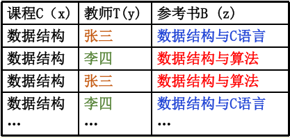
Y多值依赖于X，Z多值依赖于X，记作X->->Y，X->->Z（对于给定的X，有相互独立的X、Z组合）
4NF：1NF + 对于R的每个非平凡多值依赖X->->Y，X都是超码
flowchart TD
1NF--消除非主属性对码的<u>部分</u>函数依赖-->2NF
2NF--消除非主属性对码的<u>传递</u>函数依赖-->3NF
3NF--消除主属性对码的部分和传递依赖-->BCNF
BCNF--消除非平凡且非函数依赖的多值依赖-->4NF6.3 数据依赖的公理系统
属性闭包的求解：求出从属性A开始根据函数依赖能导出的所有属性
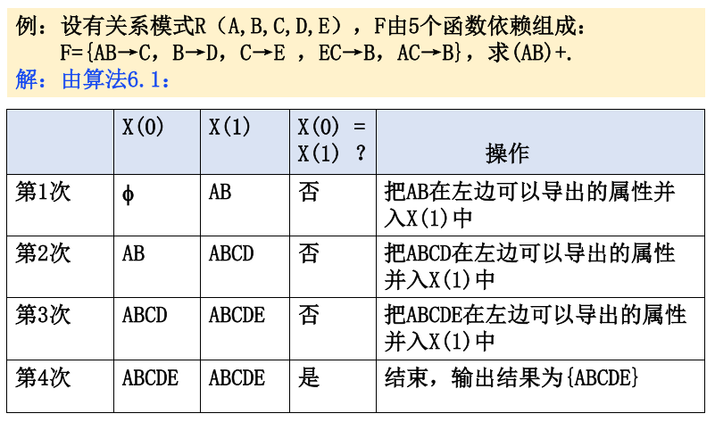
最小函数依赖集的求解：
- 分离每个函数依赖右部属性
- 去掉多余函数依赖（如果能从剩下的函数依赖推导出，就去掉）
- 去掉左部冗余属性（X->Y，左部X有多个属性ABC的情况，先去掉其中一个A，如果BC的属性闭包包含Y，那么A就是多余属性，可以去掉）（换句话说，如果通过BC以及现有函数依赖能推出Y，那么A多余）（或者说，如果根据其他条件，BC能推出A，那么A多余）
候选码求解：
- 求最小函数依赖集
- 关注未在右边出现过的属性，肯定在候选码中
- 先依次单个看每个依赖左边的X，能不能通过X单独推出所有属性，如果能，则X为候选码
- 剩下的属性两两组合，看能不能推出所有属性
- 再在剩下的三个三个，四个四个组合……直到结束
6.4 保持函数依赖的模式分解
大致：先求出最小函数依赖集，然后把左部相同的归为一组
第七章 数据库设计
7.1 数据库设计概述
7.2 需求分析
7.3 概念结构设计（ER图）
实体：矩形；属性：椭圆；联系：菱形
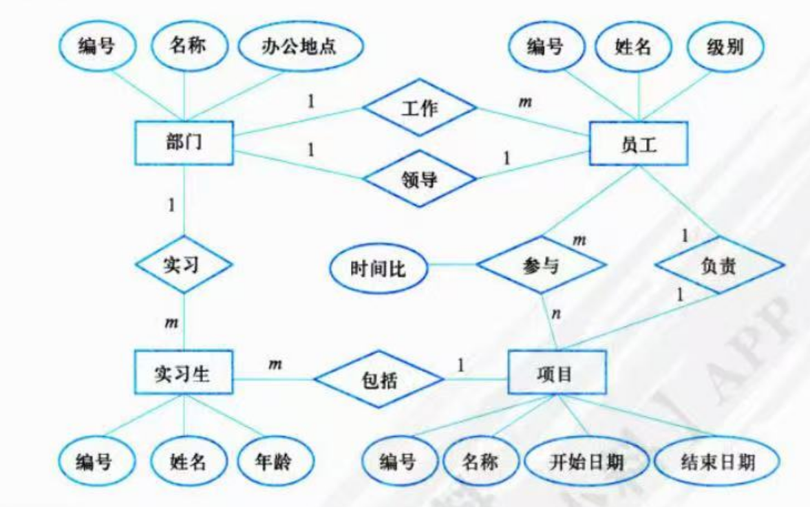
7.4 逻辑结构的设计
ER图向关系模型的转换
联系的转换：
1:1：可以转换为一个独立的关系模式，也可以与任意一端对应的关系模式合并
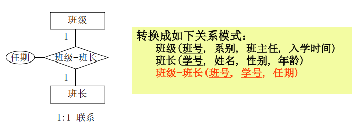
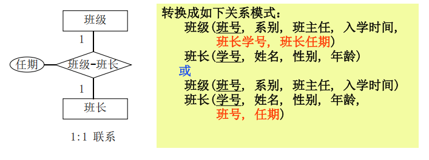
1:n：可以转换为一个独立的关系模式，也可以与N端的关系模式合并
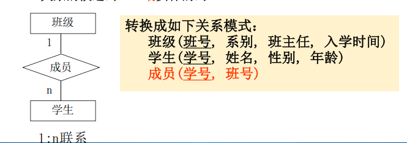
这个独立关系的码是n端实体的码
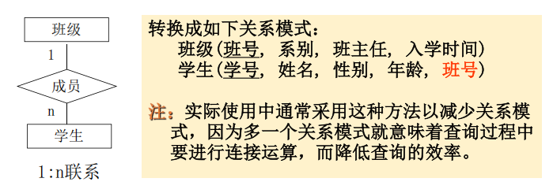
m：n：转换为一个独立的关系模式。这个关系的码至少包含各实体码的组合。
7.5 数据库的物理设计
存储结构和存取方法
索引存取：
1、哪些属性列建立索引：经常在查询条件中出现的；经常作为最大值和最小值等聚集函数的参数；经常在连接操作的连接条件中出现的
2、建立什么样的索引：聚集索引（主键索引）/ 二级索引（非主键索引）；B树索引/Hash索引；唯一索引；单一索引/复合索引；全文索引（不用会吧）
7.6 数据库的实施和维护
第八章 数据库编程
JDBC理论没法考
8.1 概述
8.2 过程化SQL
8.2.5 存储过程与存储函数
存储过程/存储函数是一段在数据库服务器上执行的程序（被命名、编译和保存在数据库中）。它在服务器端对数据库记录进行处理，再把结果返回给客户端。
优点：1.减少网络流量，充分利用服务端的强大计算能力。2.封装业务逻辑，数据结构变化时对应用程序的影响减至最小。3.增强代码的共享性和重用性，安全性。
存储过程：
1 | delimiter $$ |
存储函数：
1 | delimiter $$ |
8.2.6 触发器
触发器： 一种特殊的存储过程，它在满足某个特定条件时 自动触发执行。它是依附于表的数据库对象。
1 | delimiter // |
估计这一章的代码应该不怎么考。
第九章 存储管理
9.1 DBMS存储概述
数据库的逻辑组织方式：表空间——段——分区——数据块
数据库的物理组织方式：记录——块——文件
9.2 磁盘管理
定长记录：每条记录长度固定（内存字节对齐问题：数据的开始地址为4或8的倍数）
变长记录：长度可变
页（块）：闲的话看
文件组织：无序记录文件（堆文件heap或pile file)、有序记录文件(排序文件Sequential)、聚簇文件(Clustering file)、B+树存储（B+ Tree）、散列文件(Hash file)
堆存储：记录可存储于文件任意块，磁盘上的记录是无序的；更新快，查询慢
顺序存储：按某个属性的顺序插入，磁盘上的记录是有序的；更新慢，查询快
9.3 缓冲区管理
9.4 索引
稠密索引（PPT61页）：先依次读入索引块，指导索引块中有要找的索引；再根据指针读入数据
稀疏索引（索引块中没包含全部索引）：读入索引块，查找数值小于等于xxx的最大索引项（如果是升序排列）；根据指针读
多级索引：二级稀疏索引、一级稠密索引（看图便知）
聚集索引与非聚集索引、主索引与辅助索引、全文索引（不知道）（聚集索引：按照主键的大小进行记录和页面的排序）
B+树：给一个B+树知道怎么查应该就行
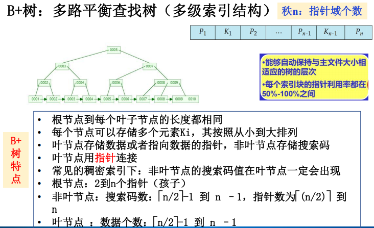
（这个图只是展示，没符合搜索码数和数据个数的特点）
散列索引（哈希）：根据哈希函数计算出桶号；在桶里找索引；根据指针读（共2次I/O）
第十章 关系查询处理与查询优化
10.1 关系数据库系统的查询处理
我猜只要会判断什么时候全表扫描，什么时候索引扫描就行：如果命中率低，索引扫描更优；但如果命中率非常高、或者要查找的元素均匀分散在表中，可能全表扫描更优
查询处理的步骤：分析、检查、优化、执行
10.2 关系数据库系统的查询优化
10.3 代数优化
尽可能早做选择和投影，把笛卡尔积换成先选择再连接
会画：SQL查询树+关系代数语法树+优化后的语法树
10.4 物理优化
第十一章
11.1 事务的基本概念
一个不可分割的工作单元（要么全做，要么全不做）
原子性（全做或者全不做）、一致性（事务执行的结果必须是使数据库从一个一致性状态变到另一个一致性状态）、隔离性（一个事务的执行不能被其他事务干扰）、持续性（事务一旦提交，它对数据库中数据的改变就应该是永久性的）
数据恢复的基本单位：事物
11.2 数据库恢复概述
把数据库从错误状态恢复到某一已知的正确状态(亦称为一致状态或完整状态）
11.3 故障的种类
事物故障：某个事务在运行过程中由于种种原因未运行至正常终止点就夭折了
系统故障：整个系统的正常运行突然被破坏，所有正在运行的事务都非正常终止，内存中数据库缓冲区的信息全部丢失，外部存储设备上的数据未受影响
介质故障：介质故障是指存储数据库的设备(如硬盘)发生故障，使存储在其上的数据部分丢失或全部丢失。介质故障又称为硬件故障。
11.4 恢复的实现技术
数据转储：指数据库管理员定期地将整个数据库复制到磁带、磁盘或其他存储介质上保存起来的过程。
登记日志文件：用来记录事务对数据库的更新操作的文件，只能顺序追加，不同事务的日志记录交错存储，按照时间顺序记录。
- 登记的次序严格按并发事物执行的时间次序
- 必须先写日志文件，后写数据库
11.5 恢复策略
事物故障的恢复：由恢复子系统利用日志文件撤消（UNDO）此事务已对数据库进行的修改（系统自动完成）
系统故障的恢复：故障发生的时间点前，未提交的undo（撤销，也称回滚，变成未做状态），已提交的redo（重做，变成已做状态）
介质故障的恢复：重装故障前的最后一个转储副本，然后根据日志全部重做
11.6 具有检查点的恢复技术
从距离故障发生最近的一个检查点开始扫描，检查点前已提交的事物不用重做，剩下的按故障发生点，已提交的重做，未提交的撤销
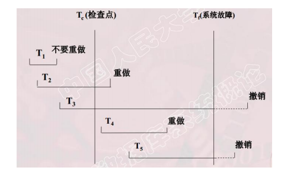
11.7 数据库镜像
11.8 MySQL中的事物日志文件
第十二章 并发控制
12.1 并发控制概述
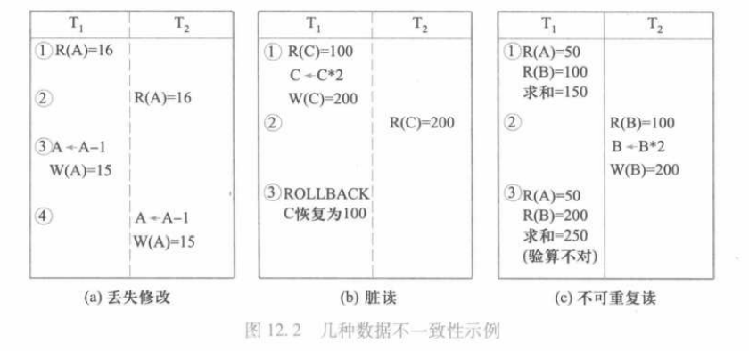
并发导致的四类数据不一致：
丢失修改：T2读了之后，T1修改了数据，后面T2操作时用的还是T1改之前用的数据，T1白改了
脏读：T2读了之后，T1的写操作被撤销了，所以T2读的是错的，称为“脏数据”
不可重复读：T1两次读到结果不一致（因为期间T2更改了数据）（这当中包括幻读）
12.2 封锁
封锁：事务T在对某个数据对象操作之前，先向系统发出请求，对其加锁。
X锁：排他锁、写锁（加X锁后不能再加任何锁）
S锁：共享锁、读锁（加S锁后只能再加S锁，不能再加X锁）
12.3 封锁协议
何时申请X锁或S锁，持锁时间、何时释放
一级封锁协议：事物T修改数据R前须加X锁，直到事物结束才释放（可解决丢失修改）
二级封锁协议：一级 + 事物T读取数据R前须加S锁，直到读完释放（可解决丢失修改、读脏数据）
三级封锁协议：一级 + 事物T读取数据R前须加S锁，直到事物结束释放（可解决丢失修改、读脏数据、不可重复读）
12.4 活锁与死锁
活锁：T1、T2、T3、T4相继申请R的锁，可是T2可能永远处于等待之中
解决方案：依据请求封锁的先后次序对事务排队，首先批准申请队列中第一个事务获得锁。
死锁：T1在等待T2释放R2，而T2又在等待T1释放R1，T1和T2两个事务永远不能结束，形成死锁。
解决方法：一次封锁法、顺序封锁法；顺序法、等待图法
12.5 并发调度的可串行性
将所有事务串行的调度策略一定是正确的调度策略。
可串行化（Serializable）的调度策略：几个事务的并行执行是正确的，当且仅当其结果与按某一次序串行地执行它们时的结果相同。
冲突操作：不同的事务对同一数据的读写操作和写写操作
不同事务的冲突操作是不能交换的
通过交换不冲突操作，如果可以变成串行，那么这个调度是冲突可串行化的调度（是可串行化调度的充分条件）
12.6 两段锁协议
1.第一阶段是获得封锁，也称为扩展阶段：事务可以申请获得任何数据项上的任何类型的锁，但是不能释放任何锁
2.第二阶段是释放封锁，也称为收缩阶段：事务可以释放任何数据项上的任何类型的锁，但是不能再申请任何锁。
若并行执行的所有事务均遵守两段锁协议，则对这些事务的所有并行调度策略都是可串行化的。
12.7 封锁粒度
X锁和S锁都是加在某一个数据对象上 ，封锁粒度即指封锁对象的大小
多粒度封锁：PPT61页，大致是一个树形结构，每个结点都可以被独立加锁，对一个结点加锁意味着对所有后裔结点也被加以相同类型的锁
意向锁：如果对一个结点加意向锁，则说明该结点的下层结点正在被加锁，对任一结点加基本锁，必须先对它的上层结点加意向锁
MySQL中的并发控制（不知道说了什么）
12.8 MVCC